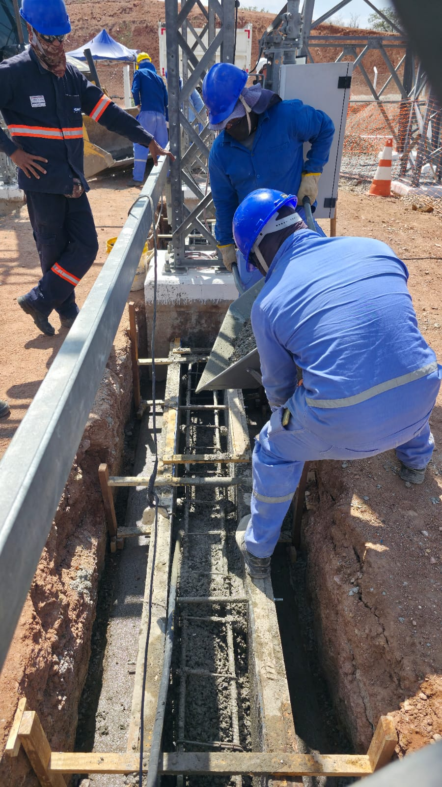
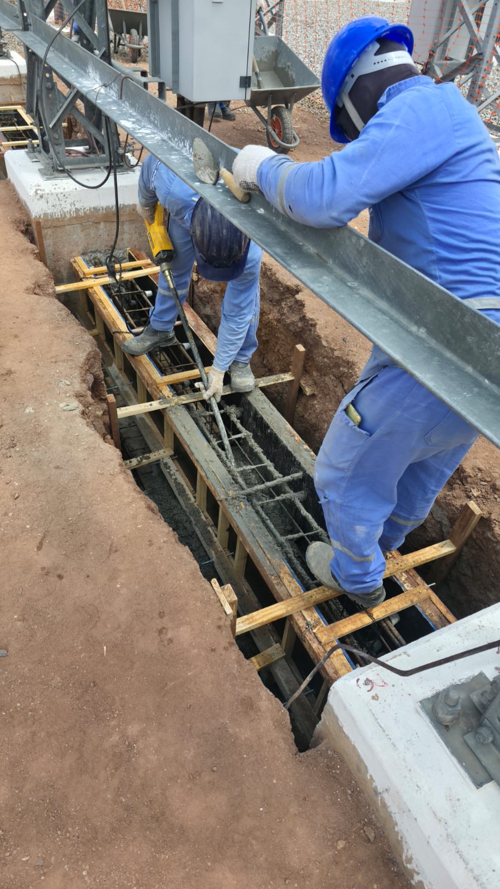
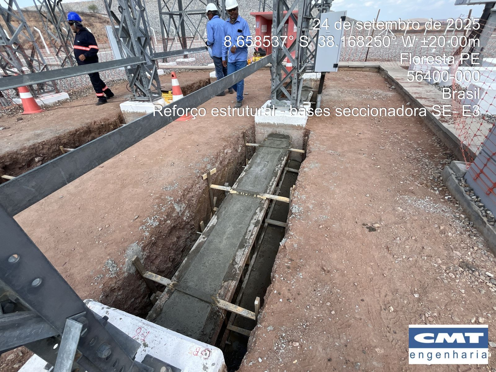
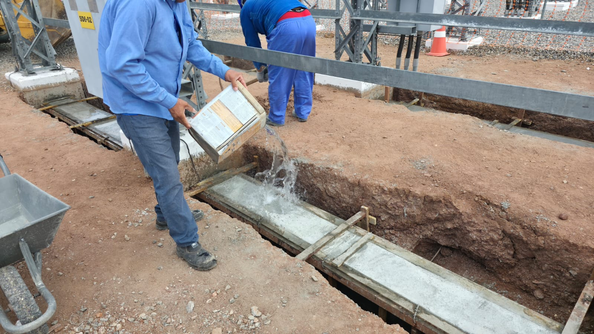
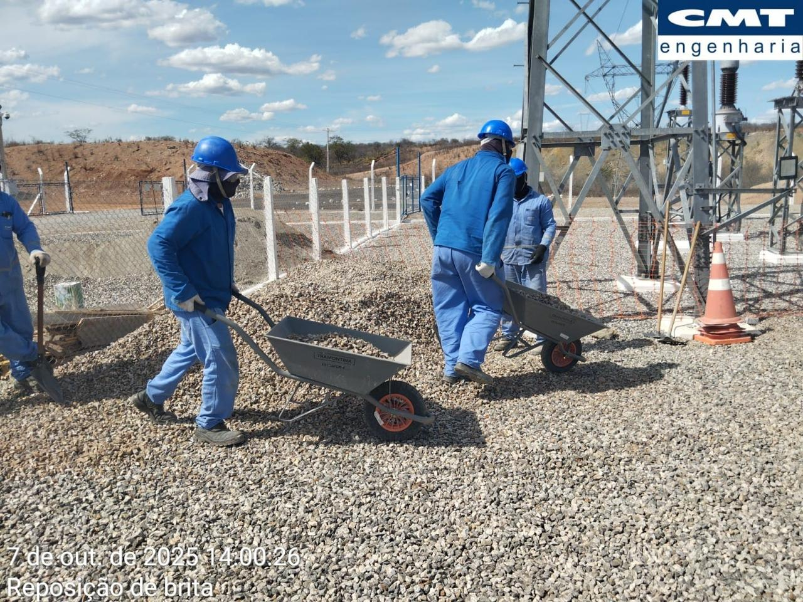
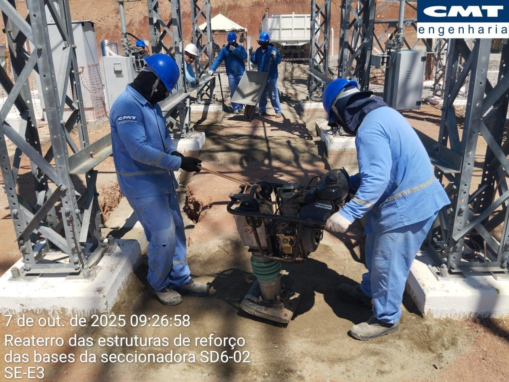
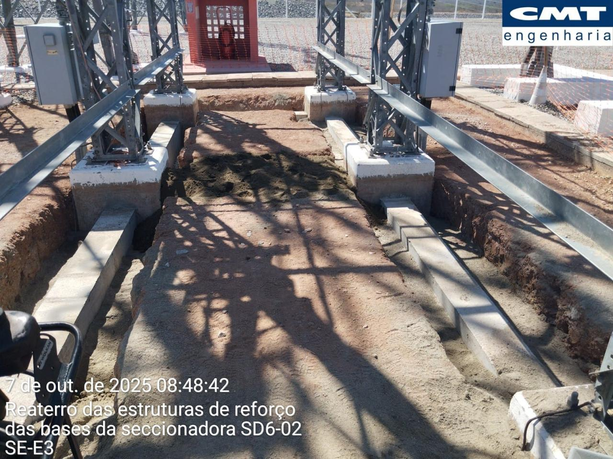

Intertravamento físico para obtenção de comportamento monolítico

concretagem da viga T-invertido

adensamento do concreto

viga T-invertido totalmente concretada

processo de cura | umedecimento
Desforma e compactação do solo com sapinho

transporte do material para aterramento

compactação das vigas transversais com sapinho

vigas desformadas e parcialmente aterradas